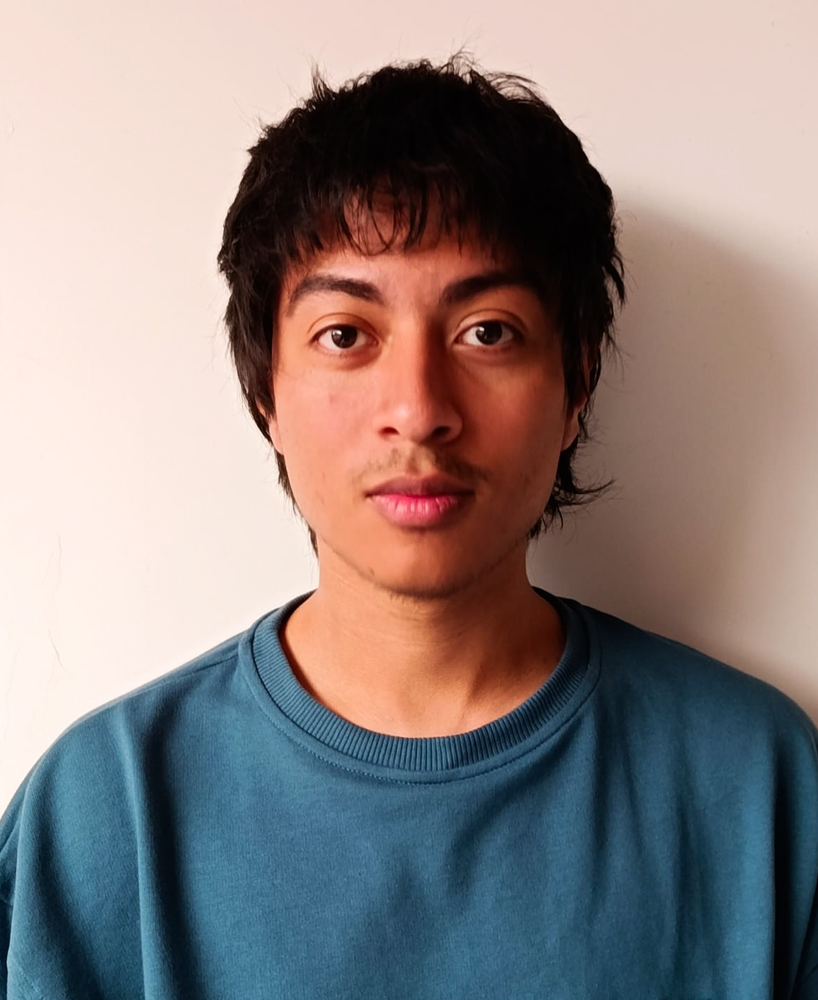
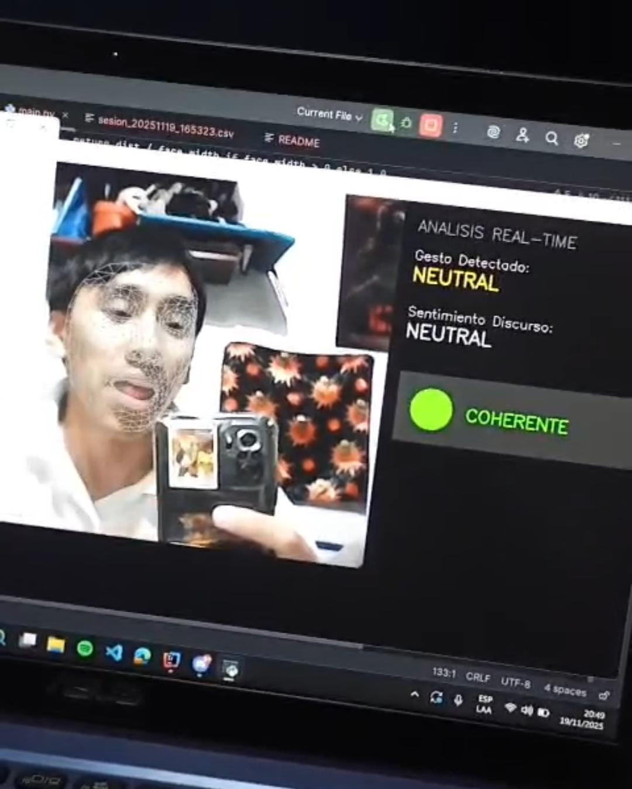
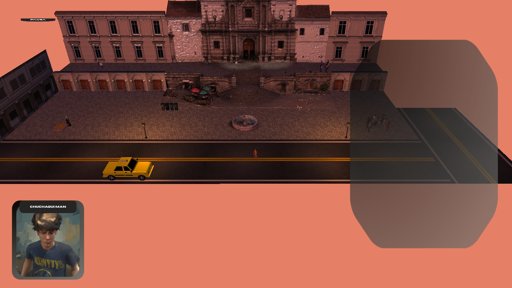
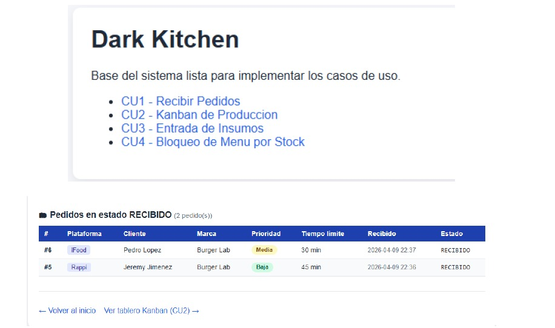
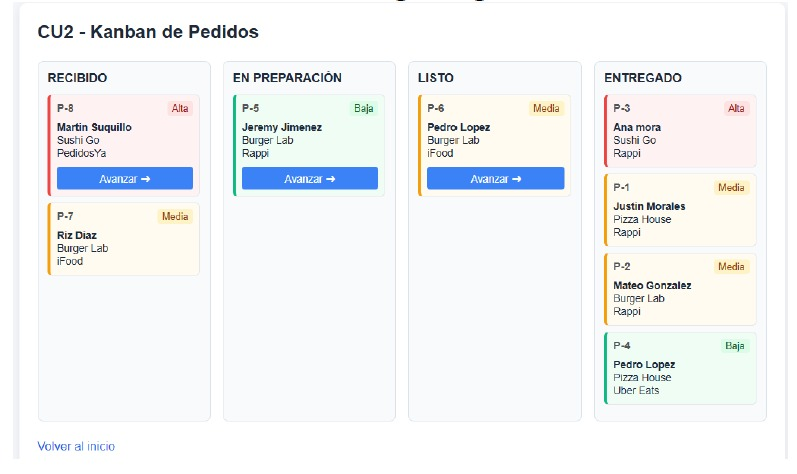
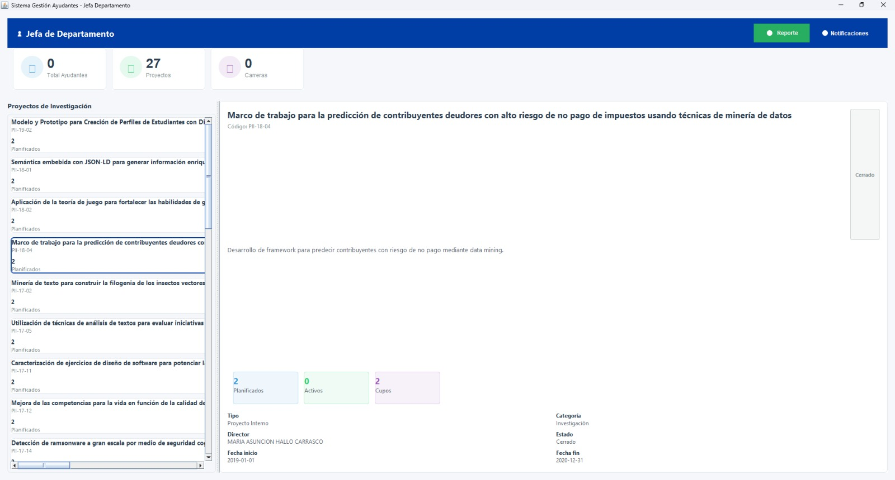

Estudiante de Ingenieria de Software de la Escuela Politecnica Nacional

Estudiante de Ingeniería de Software de sexto semestre, con conocimientos en instalación y configuración de software, mantenimiento básico de equipos y soporte técnico. Me caracterizo por ser responsable, decidido, colaborador, adaptable a nuevos entornos, optimista y eficiente. Busco aplicar mis conocimientos técnicos en entornos que me permitan seguir creciendo como profesional y contribuir a mi experiencia a futuro.
He trabajado en el desarrollo de aplicaciones académicas, incluyendo sistemas con bases de datos, interfaces gráficas y arquitectura en capas. También tengo experiencia en el uso de tecnologías como Java, SQLite y herramientas de desarrollo.
Esta aplicacion permite analizar en tiempo real aspectos de un discurso como la emocionalidad o atingencia y retorna un feedback para mejorar la oratoria del usuario.

Este videojuego es una aventura interactiva realizada en OpenGL como proyecto de Computación Gráfica

Esta aplicación es un sistema de gestión para Dark Kitchens, que permite administrar pedidos, inventario de la cocina y operaciones de manera eficiente.

Aplicación diseñada para gestionar órdenes de pedidos utilizando un tablero Kanban, facilitando la organización y seguimiento de las tareas en un entorno de cocina o restaurante.

Programa desarrollado para gestionar la información de los ayudantes de la Facultad de Sistemas, incluyendo roles para la jefatura y los docentes a cargo de proyectos.
